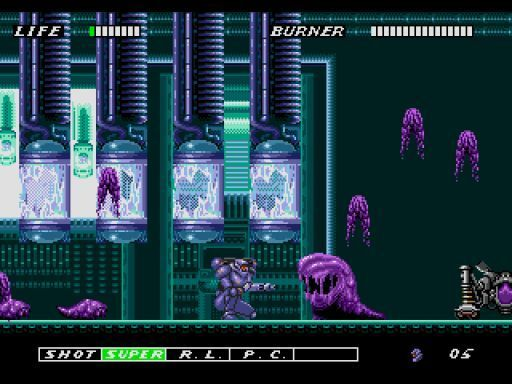
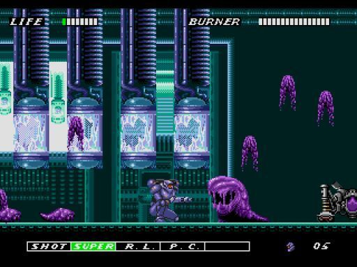

Tomba - Playstation One
Made by WhoopeeCamp a company that sadly only made two games, Tomba and Tomba 2, then got into some financial trouble and sold to Take 2 Interactive. Evil pigs. Man-eating plants. Hidden paths. Wacky weapons. Moving obstacles. Can you believe what Tomba has to go through to conquer the menacing wine?! A wild intact game with some RPG and adventure mixed in, too. 130 events to clear deliver non-stop action. This is one of my favorite games of all. I enjoy playing it over and over! It has everything an adventurer would ask for in a platforming game.
Sonic The Hedgehog 2, 3, and Knuckles - Sega Genesis
The mascot of the Sega Genesis, Sonic The Hedgehog classic games are my favorite among the classic consoles except the first one, yup haters gonna hate! But Sonic 2, Sonic 3, Sonic and Knuckles are such great games even today I still go back to them every few years to remind me of the first time I hit that jump button or do a spin dash. Ahh memories. I've tried the later games that came after Sonic Adventure but that magic feeling I had with the classics just wasn't there. Play as Sonic, Tails, and Knuckles to fight the Evil Robotnik (modern name Eggman) and his evil schemes to destroy the environment and to turn every living thing into machines.
Tomb Raider Series - Playstation One
Tomb Raider classic games are my favorite out of the entire franchise. I've tried playing the newer ones but they are missing that "magic" the first ones had. They were also harder, they didn't hold your hand or tell you to press a button at the right time to dodge flying arrows, they required skills that build up as the game progresses. The puzzles have no hints, to figure them out require trial and error. And my favorite part is the exploration, running to every corner looking for secrets, new weapons and ammo. The exhilaration of being at the edge of a platform wondering if Lara will make the jump on top of a cliff or a sunken ship or in a thousand year old ruin buried under a mountain.

E-Swat - Sega Genesis
A Robocop wannabe game about a regular city cop that puts on a super powerful metal suit with hover jets and a gun with immense power if charged. A city under siege, only one man can stop the terror.... How many times have you heard that? It's an old game but fun it's damn hard but the game rewards with power-ups and different weapons. Enemies come from all corners, death comes with just a few hits but when the character puts on that metal suit all enemies stand no chance. I love this game just because when that suit comes on I feel invincible but actually not because the developers thought it was a good idea to make the game harder when the metal suit activates..
 

Star Wars Empire Strikes Back - Nintendo Entertainment System
Oh boy JVC made some games in the past, thank goodness that's where it stays. JVC along with LJN made some terrible games but this is not one of them. I really enjoyed this one, sure it didn't follow the movies but what video games does otherwise the plot would be revealed in the game. But that is why this game is good, it had jedi powers, light sabers, Tonton's, space battles, sure it's primitive but graphics alone doesn't make a game great, here comes some hate from some people that say graphics count, they do but if a game has amazing graphics but gameplay is terrible um...(cough).."No Man's Sky" I'm not going to play it. But Empire Strikes Back has very shallow story line but the gameplay is total fun. Not too hard but not too easy either, it's just right, and you get to play as Luke Skywalker, get to fight Darth Vader. It's perfect.
Grand Theft Auto San Andreas - Playstation 2
This is my favorite game for the Playstation 2. The franchise starting with Gta III introduced me to free roam games pretty much do anything. I used to spend many hours a day playing it. Even after finishing the main quests the games actually got better because only after completing the main quests all areas would open up. Swim, dance, drive for hours causing mayhem, stealing car after car blowing it up, flying helicopters, planes, even a jet pack at my disposal. I spent almost an entire year playing only Gta San Andreas and nothing else. Even to this day I occasionally go back and play it. The modding community is still going strong today, making gta sa look like gta v, endless mods to change almost every single item in the game.


Conker's Bad Fur Day - Nintendo 64
I don't know where to begin with this game. It's the best Nintendo 64 game ever made by far. The game starts out with a drunk squirrel trying to get home but goes the wrong way. In order to get home he has to help the nearby animals with their problems. This game is vulgar, it has animated gore, British humor and makes fun of every movie made before 2005 even the Matrix. A bully squirrel that kills zombies, kills catfish, Gothic architecture yes you read correctly, a talking Gothic Architecture, even kills a giant singing pile of poop this one you just have to experience for yourself. He only looks out for himself and trying to get rich no matter who he hurts. The most controversial game Nintendo wishes they never put on their console. Made by Rare an amazing video game company that is no longer around, sold to Microsoft due to financial problems.
Judge Dredd - Super Nintendo
Judge Dredd is a game based on the mid 90's movie starring Silvester Stallone, all police officers and judges have been replaced by Judges which are police officers, judges and executioners in one. The movie was pretty good but the game is better. Running round killing bad guys, no mercy! Or the player can arrest them boring... Saving innocent lives or you can kill the hostage up to you but the game takes points away. This game is hard as stone. I died so many times barely passing the first level within a week, took me almost a month to pass it....with cheat codes, last boss is murder takes some skills and patience which I didn't have. The game is very repetitive at times, kill, save hostages, pickup ammo, but as the game progresses it rewards the player with better weapons, ammo and power-ups typical run and gun game. That's pretty much it.
Metroid Prime - Nintendo Gamecube
Metroid Prime was actually the first game in the franchise I played only years later I realized that it was tied to the Super Metroid for the Super Nintendo. This is a true works of art, made to make you feel isolated by not having any other character in the entire game, only enemies and the environment, the story is great but the gameplay is even better. The huge worlds, reading files to find out what happened to the crew of the star system, trying to find your pieces of the Samus suit. And Samus has some amazing power-ups, like the morph ball or the ability to see through walls.

Star Wars Knights Of The Old Republic - PC
This star wars game is so amazing, I still play it once in a while on my Android smartphablet. The game was released for the Android platform a few years ago. The game starts as this character on the Endire Spire a battleship, as he progresses he has weird visions and learns he has Jedi powers. He has to help people on his journey and gets to choose to either use his Light powers or become evil, the choice is yours to make. This game takes place 4000 years before Luke Skywalker. this game was originally released on the original XBOX and soon after to PC and PS2. The game is an RPG turn based battle system but a little different,can customize lightsabers, weapons, and gear. I really love the end, won't spoil it, but the story is very well written. This was before Disney bought LucasArts. LucasArt games were amazing! Every one of them felt custom hand made and then added love.